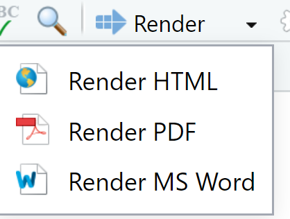
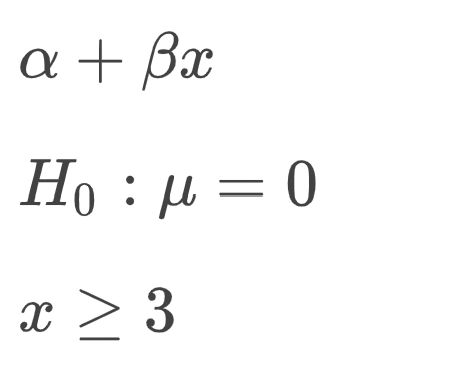

# write your R code hereIntroduction to using R with Quarto
MASB11 VT 25
1 Introduction
Quarto is a tool for creating reports by combining code with text. You will use Quarto to conduct experiments and create lab reports in the course. You are encouraged to use Quarto for the two mini-projects, but it is not mandatory.
This is an introduction to the tool with examples of what you can do with Quarto.
Open RStudio and the file Lab0_introtoR.qmd.
The title of this document is called YAML. It describes the settings for the document in a hierarchical manner. Note that where you place text (indented) in YAML matters for how it is interpreted.
Go through the document and explore the comments to understand the different settings. Try changing some settings and compile (knit) the document using the ‘Render’ button in RStudio.
1.1 Rendering of .Rmd to html
The program generates a report in various formats. The simplest format to use is HTML. We recommend using HTML while working on the lab and knitting to PDF when submitting. Press the black downward arrow to the right of Render and select Render HTML.

1.2 Rendering of .Rmd till PDF
You should submit lab reports and mini-projects as a PDF. You can create a PDF directly by choosing Render PDF instead.
If everything goes as expected, a PDF document (Lab0_example.pdf) should open in a PDF reader. If a PDF does not open, check if it is among the files (under Files).
1.3 Rendering of .Rmd till Word
A third option is to write the report to Word. Press the black downward arrow to the right of the Knit symbol. Choose ‘Render MS Word’.
If everything goes as planned, a docx document with the same name (Lab0_example.docx) should be created. If not, please contact the instructor.
1.4 Run an R command and get results in a command block
R functions as a mini-calculator, but with much more capability. Write your R code in a code block (‘chunk’). When you click on the green symbol +C, the code block opens as a gray area (see below). Try calculating 3 + 4. Note that the block should only contain R code, and the symbol # in front of code or text deactivates the code.
If you write 3 + 4, the results will be shown when you render and you see the R code in the report.
You can hide the R code by adjusting the option echo as false (echo: false). This is an adjustement for this particular chunk and must begin with #|. Test what happens when you add #| echo: false in the beginning of the code-block and render the document again.
Note that it is also possible to adjust the global options for the whole document, which is relevant for the mini projects.
1.5 Run an R command and get results directly into the text
In the report being created you still see the result from the operation 3 + 4 as
[1] 7
Imagine a situation where you want to put the results from your calculations directly into the report. First you have to save the result as an object in R, let us call the object “result”.
The you write a text which refers to the object “result”. For the code to understand that this is an object from R, you write a backtick followed by a r in front of the object and end with another backtick. On my computer I get a backtick by Shift + backtick followed by space.

Render the document. You should see the following:
If you add 3 and 4 you get 7.
1.6 Make calculations and implement the result in the text
You can also add more advanced computations into the text.
x <- 1:10
x [1] 1 2 3 4 5 6 7 8 9 10The object x contains a vector of values. The mean for this vector is 5.5 and the variance is 9.1666667.
Note that the result can be rounded to 2 or 3 decimals. Here, the variance is rounded to two decimals 9.17.
1.7 Writing mathematical expressions like a model or hypothesis
Mathematical formulas are written using MathJax (similar to LaTeX). Just as the symbol r indicates when something is code or variables in R, LaTeX text is marked by dollar signs before and after the expression (e.g., \(f(x)\)). Use two dollar signs before and after to get a mathematical expression on its own line.
\[ E=mc^2 \]
Tip
Check in the report templates how we have done it
Test to generate the following text by placing your self in an empty row in the qmd-file or open a new qmd document and write expressions with LaTeX/MathJax. Go to File and choose New File > Quarto Document.
Greek letters
It is common to use greek letters for parameters, such as \(\mu\), \(\sigma\) and \(\beta\).
Write an expression with lowered/raised text
\(x_1\) or \(y_i\)
You can have more than one symbol lowered, for example \(X_{groupA}\).
Tip
To get more than one symbol lowered, you have to put it inside curly brackets
Write an expression with superscript such as \(x^2\) or \(\sigma^2\). Several symbols can be included into a super script, e.g. \(e^{-\beta x}\). Consider spaces between symbols for readability.
How to write an expression that is a ratio
\(\frac{1}{n}\)
How to write an expression that is a sum
\(\sum_{i=1}^{n} x_i\)
Write in new expressions
Try to reproduce the following expressions in this document
